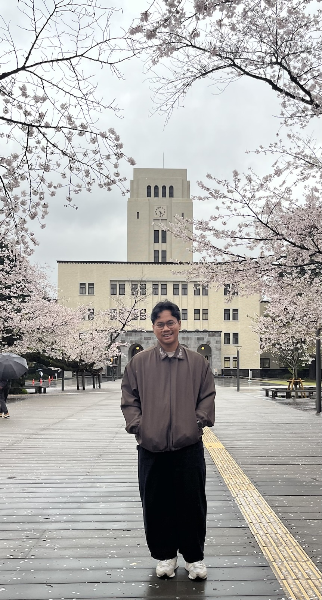
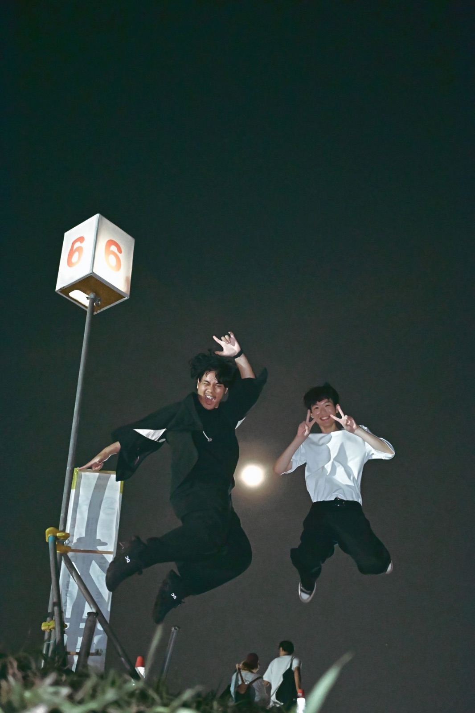
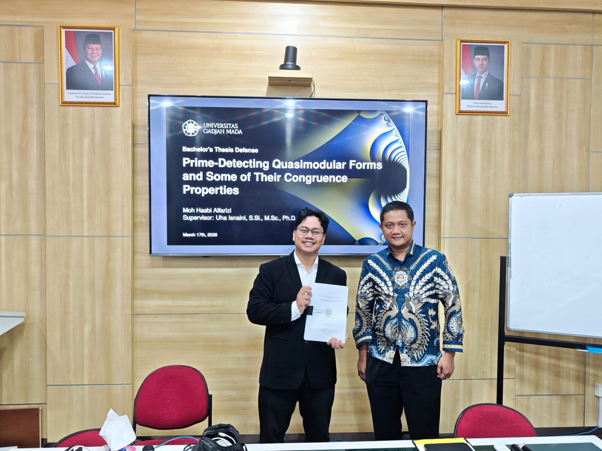
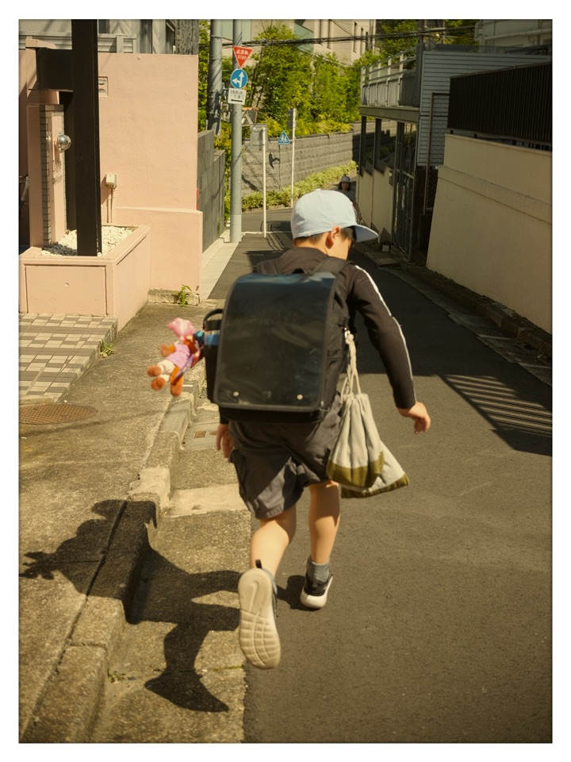

Welcome to Hasbi's Homepage

Hi, I'm Hasbi! I just finished my bachelor's in mathematics at Universitas Gadjah Mada, Indonesia, where my thesis was about quasimodular forms that detect prime numbers. This year I also spent a few months in Tokyo as a research student, learning more about modular forms.
These days I'm mostly working on machine learning and AI projects, and slowly figuring out what comes next. Outside of that, I like teaching (I was a teaching assistant for a few courses at UGM), organizing things with friends, and taking photos on the street. More about me is in my CV.
Latest Updates
-
ScholarRAG: Cited Question Answering over Scientific Papers
I've made a retrieval-augmented question-answering system over 200 arXiv papers on visual anomaly detection, with checked citations.
-
Lecture Notes on Advanced Topics in Algebra E & F
My lecture notes from sitting in on Prof. Tadashi Ochiai's graduate courses.
-
Research Notes on Modular Forms and Hecke Operators
My research notes from my time as a YSEP research student at the Institute of Science Tokyo.
Lately
Spring 2026: a semester in Japan
From April to August, I was in Tokyo as a YSEP exchange student at Institute of Science Tokyo, learning modular forms with Dr. Soma Purkait (more in my research notes). Besides math, I sat in on some graduate lectures, walked around the city with my camera, and enjoyed the Japanese summer, including a hanabi (fireworks) night with Ukjin (노욱진).

March 17, 2026: thesis defense
Right before leaving for Japan, I defended my bachelor's thesis, Prime-Detecting Quasimodular Forms and Some of Their Congruence Properties. Grateful to my supervisor, Dr. Uha Isnaini, for guiding me all the way through it.

Early 2026: picking up a camera
Also since the start of this year, I've been into street photography: catching small everyday moments of people on the street, like street vendors and freelance workers, both in Indonesia and in Japan. More of my photos (and a bit more about it) are on my Miscellaneous page.
